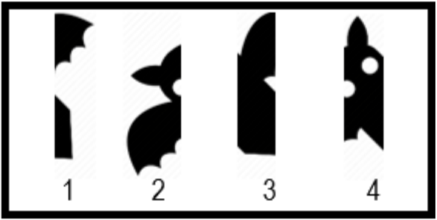

Potongan-potongan gambar berikut berasal dari satu gambar utuh yang dipotong tegak lalu diacak.
Urutan potongan dari kiri ke kanan yang membentuk gambar utuh adalah …

- 2 – 4 – 3 – 1
- 3 – 2 – 4 – 1
- 2 – 4 – 1 – 3
- 1 – 2 – 4 – 3
- 3 – 2 – 1 – 4
Gambar utuh adalah siluet kelelawar. Potongan 2 memuat ujung sayap kiri, potongan 4 memuat kepala dan telinga (lekukan putihnya bertemu di sambungan 2–4), potongan 3 badan dan pangkal sayap kanan, dan potongan 1 ujung sayap kanan. Urutannya 2 – 4 – 3 – 1.
Opsi B (3 – 2 – 4 – 1) gugur karena potongan paling kiri harus 2, bukan 3; Opsi C (2 – 4 – 1 – 3) gugur karena potongan 4 dan 1 tidak menyambung (garis dan bentuk di tepinya terputus); Opsi D (1 – 2 – 4 – 3) gugur karena potongan paling kiri harus 2, bukan 1; Opsi E (3 – 2 – 1 – 4) gugur karena potongan paling kiri harus 2, bukan 3. Jawaban: Opsi A (2 – 4 – 3 – 1). Tips: cari potongan yang tepi kirinya polos (ujung gambar) sebagai potongan pertama.